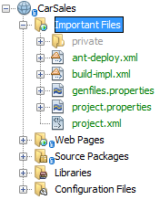
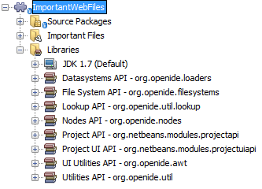
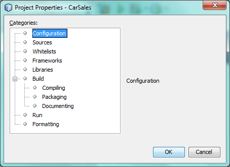
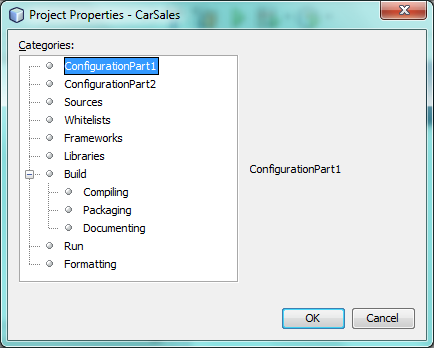

Apache NetBeans
Apache NetBeansLatest release
NetBeans Project Type Extension Module Tutorial
Last reviewed on 2022-01-19
This tutorial demonstrates how to extend an existing project type.
You will also make use of this icon, which you can right-click here and download:
Introduction to Project Extensions
New NetBeans IDE APIs since NetBeans IDE 6.0 enable you to add new nodes to an existing project type’s logical view, new objects to an existing project type’s lookup, and new panels to an existing project type’s Project Properties dialog box. For example, in this tutorial, to illustrate these extensions, we extend the web application project type’s logical view, by adding a new "Important Files" node, exposing the content of the project’s "nbproject" folder, as shown here:

Prior to NetBeans IDE 6.0, no NetBeans IDE APIs existed for extending existing project types. Instead, you would need to create new project types from scratch. From 6.0 onwards, you are recommended to extend existing project types rather than create new ones, where possible. This will keep the number of project types to a minimum and avoid a large number of project types with very small differences. However, it is, of course, always possible to create project types from scratch, as before, following the NetBeans Project Type Module Tutorial.
Annotations are used throughout this tutorial to register the lookup extension, logical view extension, and project customizer extension. As you will see below, the extensions will be registered for the project type "org-netbeans-modules-web-project", which is the web application project type. Here is a list of strings representing other project types supported by NetBeans IDE:
-
org-netbeans-modules-ant-freeform
-
org-netbeans-modules-apisupport-project
-
org-netbeans-modules-apisupport-project-suite
-
org-netbeans-modules-j2ee-archiveproject
-
org-netbeans-modules-j2ee-clientproject
-
org-netbeans-modules-j2ee-earproject
-
org-netbeans-modules-j2ee-ejbjarproject
-
org-netbeans-modules-java-j2seproject
More project types may be available, depending on the modules that are part of your specific installation of NetBeans IDE or other application on the NetBeans Platform.
Creating the Module Project
We begin by working through the New Module Project wizard. At the end of it, we will have a basic source structure, with some default files, that every NetBeans module requires.
-
Choose File > New Project (Ctrl+Shift+N). Under Categories, select NetBeans Modules. Under Projects, select Module. Click Next.
-
In the Name and Location panel, type
ImportantWebFilesin the Project Name field. Change the Project Location to any directory on your computer. Click Next.
-
In the Basic Module Configuration panel, type
org.netbeans.modules.importantwebfilesin Code Name Base. Click Finish. The IDE creates theImportantWebFilesproject. The project contains all of your sources and project metadata, such as the project’s Ant build script. The project opens in the IDE. You can view its logical structure in the Projects window (Ctrl-1) and its file structure in the Files window (Ctrl-2).
-
Right-click the project’s Libraries node, choose Add Module Dependency, and then set dependencies on the following modules:
-
Datasystems API
-
File System API
-
Lookup API
-
Nodes API
-
Project API
-
Project UI API
-
Utilities API
-
You should now see the following dependencies have been set:

Your module structure is ready, the dependencies have been set, and you can now begin coding.
Project Extension Scenarios
Three separate, independent scenarios are described below. Depending on your needs, extend the project of your choice in one or more of the following ways:
Scenario 1: Extending the Project Lookup
In this section, we register a class named ServiceImpl into the Lookup of web projects. We create an Action to verify that the object has been registered successfully.
-
Create a Java class named
Service. Change the default code to the following:
import javax.swing.JOptionPane;
public abstract class Service {
static {
JOptionPane.showMessageDialog(null, "===> loading Service");
}
public abstract String m();
}-
Create a new Java class named
ServiceImpl. Change the default code to the following:
import javax.swing.JOptionPane;
import org.netbeans.api.project.Project;
import org.netbeans.api.project.ProjectUtils;
import org.netbeans.spi.project.ProjectServiceProvider;
@ProjectServiceProvider(
service=Service.class,
projectType="org-netbeans-modules-web-project")
public class ServiceImpl extends Service {
static {
JOptionPane.showMessageDialog(null, "===> loading ServiceImpl");
}
private final Project p;
public ServiceImpl(Project p) {
this.p = p;
JOptionPane.showMessageDialog(null, "===> new ServiceImpl on " + p);
}
@Override
public String m() {
return ProjectUtils.getInformation(p).getDisplayName();
}
}-
Create a new Java class named
TestAction. Change the default code to the following:
import java.awt.event.ActionEvent;
import java.awt.event.ActionListener;
import javax.swing.JOptionPane;
import org.netbeans.api.project.Project;
import org.netbeans.api.project.ui.OpenProjects;
import org.openide.awt.ActionID;
import org.openide.awt.ActionReference;
import org.openide.awt.ActionRegistration;
import org.openide.util.NbBundle.Messages;
@ActionID(
category = "File",
id = "org.netbeans.modules.importantwebfiles.TestAction")
@ActionRegistration(
displayName = "#CTL_TestAction")
@ActionReference(
path = "Menu/File",
position = 0)
@Messages("CTL_TestAction=Test")
public final class TestAction implements ActionListener {
@Override
public void actionPerformed(ActionEvent e) {
JOptionPane.showMessageDialog(null, "===> running action");
for (Project p : OpenProjects.getDefault().getOpenProjects()) {
Service s = p.getLookup().lookup(Service.class);
if (s != null) {
JOptionPane.showMessageDialog(null, "===> got a service: " + s.m());
} else {
JOptionPane.showMessageDialog(null, "===> nothing for " + p);
}
}
}
}Run the module to install it into a new instance of NetBeans IDE. Open a few NetBeans projects. Invoke the Action and observe the JOptionPanes to see the result. Depending on whether a project is a web project, you will get different messages.
Scenario 2: Extending the Project Logical View
In this section, we change the node hierarchy in the Projects window for an existing project type. We start by implementing the NodeFactory class, which we will register via an annotation.
-
Create a Java class called
ImportantFilesNodeFactory. Change the default code to the following:
import org.netbeans.api.project.Project;
import org.netbeans.spi.project.ui.support.NodeFactory;
import org.netbeans.spi.project.ui.support.NodeFactorySupport;
import org.netbeans.spi.project.ui.support.NodeList;
import org.openide.loaders.DataObjectNotFoundException;
import org.openide.util.Exceptions;
@NodeFactory.Registration(projectType = "org-netbeans-modules-web-project")
public class ImportantFilesNodeFactory implements NodeFactory {
@Override
public NodeList createNodes(Project project) {
//Optionally, only return a new node
//if some item is in the project's lookup:
//MyCoolLookupItem item = project.getLookup().lookup(MyCoolLookupItem.class);
//if (item != null) {
try {
ImportantFilesNode nd = new ImportantFilesNode(project);
return NodeFactorySupport.fixedNodeList(nd);
} catch (DataObjectNotFoundException ex) {
Exceptions.printStackTrace(ex);
}
//}
//If the above try/catch fails, e.g.,
//our item isn't in the lookup,
//then return an empty list of nodes:
return NodeFactorySupport.fixedNodeList();
}
}-
Create a new Java class called
ImportantFilesNode, which will filter the node of the project’s "nbproject" folder. A new display name and icon will be defined for that folder. Therefore, change the default code to the following:
import java.awt.Image;
import org.netbeans.api.annotations.common.StaticResource;
import org.netbeans.api.project.Project;
import org.openide.filesystems.FileUtil;
import org.openide.loaders.DataFolder;
import org.openide.loaders.DataObject;
import org.openide.loaders.DataObjectNotFoundException;
import org.openide.nodes.FilterNode;
import org.openide.util.ImageUtilities;
public class ImportantFilesNode extends FilterNode {
@StaticResource
private static final String IMAGE = "org/netbeans/modules/"
+ "importantwebfiles/webPagesBadge.gif";
public ImportantFilesNode(Project proj) throws DataObjectNotFoundException {
super(DataObject.find(proj.getProjectDirectory().
getFileObject("nbproject")).getNodeDelegate());
}
@Override
public String getDisplayName() {
return "Important Files";
}
//Next, we add icons, for the default state, which is
//closed, and the opened state; we will make them the same.
//
//Icons in project logical views are
//based on combinations--you can combine the node's own icon
//with a distinguishing badge that is merged with it. Here we
//first obtain the icon from a data folder, then we add our
//badge to it by merging it via a NetBeans API utility method:
@Override
public Image getIcon(int type) {
DataFolder root = DataFolder.findFolder(FileUtil.getConfigRoot());
Image original = root.getNodeDelegate().getIcon(type);
return ImageUtilities.mergeImages(original,
ImageUtilities.loadImage(IMAGE), 7, 7);
}
@Override
public Image getOpenedIcon(int type) {
DataFolder root = DataFolder.findFolder(FileUtil.getConfigRoot());
Image original = root.getNodeDelegate().getIcon(type);
return ImageUtilities.mergeImages(original,
ImageUtilities.loadImage(IMAGE), 7, 7);
}
}-
Right-click this icon and save it in the main package of your module:
Run the module and you will notice that web applications have your newly defined node, exposing the project’s "nbproject" folder:
Scenario 3: Extending the Project Customizer
In this section, we create two new tabs in the Project Properties dialog of the web application project type.
-
Create a Java class called
ImportantFilesCustomizerTab. Change the default code to the following:
import java.awt.BorderLayout;
import javax.swing.JComponent;
import javax.swing.JLabel;
import javax.swing.JPanel;
import org.netbeans.spi.project.ui.support.ProjectCustomizer;
import org.netbeans.spi.project.ui.support.ProjectCustomizer.Category;
import org.openide.util.Lookup;
import org.openide.util.NbBundle;
public class ImportantFilesCustomizerTab
implements ProjectCustomizer.CompositeCategoryProvider {
private final String name;
private ImportantFilesCustomizerTab(String name) {
this.name = name;
}
@Override
public Category createCategory(Lookup lkp) {
return ProjectCustomizer.Category.create(name, name, null);
}
@Override
public JComponent createComponent(Category category, Lookup lkp) {
JPanel jPanel1 = new JPanel();
jPanel1.setLayout(new BorderLayout());
jPanel1.add(new JLabel(name), BorderLayout.CENTER);
return jPanel1;
}
@NbBundle.Messages({"LBL_Config=Configuration"})
@ProjectCustomizer.CompositeCategoryProvider.Registration(
projectType = "org-netbeans-modules-web-project",
position = 10)
public static ImportantFilesCustomizerTab createMyDemoConfigurationTab() {
return new ImportantFilesCustomizerTab(Bundle.LBL_Config());
}
}-
Run the module. Right-click a web application’s project node and choose Properties. Notice the new tab that has been added. The
createCategorymethod above defines the left side of the screenshot below, while the right side is defined by thecreateComponentmethod.

-
Now we’ll change the class so that two tabs are created, instead of one:
import java.awt.BorderLayout;
import javax.swing.JComponent;
import javax.swing.JLabel;
import javax.swing.JPanel;
import org.netbeans.spi.project.ui.support.ProjectCustomizer;
import org.netbeans.spi.project.ui.support.ProjectCustomizer.Category;
import org.openide.util.Lookup;
import org.openide.util.NbBundle;
public class ImportantFilesCustomizerTab
implements ProjectCustomizer.CompositeCategoryProvider {
private final String name;
private ImportantFilesCustomizerTab(String name) {
this.name = name;
}
@Override
public Category createCategory(Lookup lkp) {
ProjectCustomizer.Category toReturn = null;
if (Bundle.LBL_Config1().equals(name)) {
toReturn = ProjectCustomizer.Category.create(
Bundle.LBL_Config1(),
Bundle.LBL_Config1(),
null);
} else {
toReturn = ProjectCustomizer.Category.create(
Bundle.LBL_Config2(),
Bundle.LBL_Config2(),
null);
}
return toReturn;
}
@Override
public JComponent createComponent(Category category, Lookup lkp) {
String nm = category.getName();
if (name.equals(nm)) {
JPanel jPanel1 = new JPanel();
jPanel1.setLayout(new BorderLayout());
jPanel1.add(new JLabel(name), BorderLayout.CENTER);
return jPanel1;
} else {
JPanel jPanel2 = new JPanel();
jPanel2.setLayout(new BorderLayout());
jPanel2.add(new JLabel(name), BorderLayout.CENTER);
return jPanel2;
}
}
@NbBundle.Messages({"LBL_Config1=ConfigurationPart1"})
@ProjectCustomizer.CompositeCategoryProvider.Registration(
projectType = "org-netbeans-modules-web-project",
position = 10)
public static ImportantFilesCustomizerTab createMyDemoConfigurationTab1() {
return new ImportantFilesCustomizerTab(Bundle.LBL_Config1());
}
@NbBundle.Messages({"LBL_Config2=ConfigurationPart2"})
@ProjectCustomizer.CompositeCategoryProvider.Registration(
projectType = "org-netbeans-modules-web-project",
position = 20)
public static ImportantFilesCustomizerTab createMyDemoConfigurationTab2() {
return new ImportantFilesCustomizerTab(Bundle.LBL_Config2());
}
}Run the module again and notice that you now have two new tabs:

In this tutorial, you have learned how to extend the project’s lookup, logical view, and customizer.
Next Steps
For more information about creating and developing NetBeans modules, see the following resources: